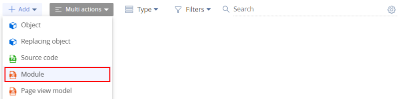
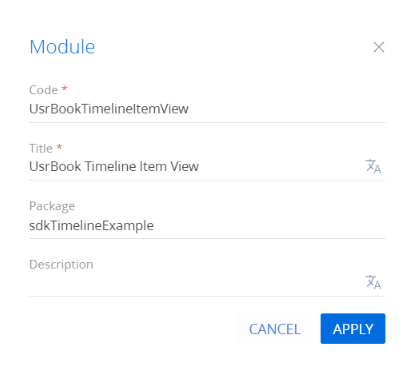
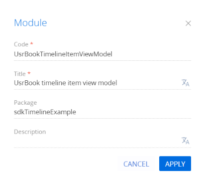
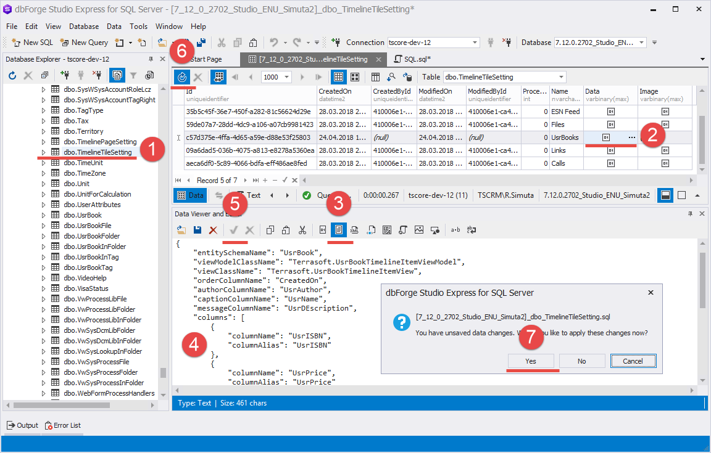

1. Создать раздел Книги (Books))
Чтобы создать раздел Книги (Books), установите пакет примера Привязать данные к пакету.
После установки пакета в рабочем месте Продажи (Sales) доступен раздел Книги (Books).

На вкладке Books страницы контрагента появится деталь, которая отображает связанные записи раздела Книги (Books).
2. Создать модуль представления плитки
- Перейдите в раздел Конфигурация (Configuration) и выберите пользовательский пакет, в который будет добавлена схема. Установить зависимость от пакета Timeline.
-
На панели инструментов реестра раздела нажмите Добавить —> Модуль (Add —> Module).
 -
Заполните свойства схемы.
- Код (Code) — "UsrBookTimelineItemView".
- Заголовок (Title) — "Представление элемента хронологии UsrBook" ("UsrBook Timeline Item View").
 -
Добавьте логику отображения плитки. Для этого реализуйте методы:
- getUsrISBNViewConfig — возвращает конфигурацию дополнительного поля UsrISBN плитки.
- getUsrPriceViewConfig — возвращает конфигурацию дополнительного поля UsrPrice плитки.
- getBodyViewConfig — переопределенный метод, который возвращает общую конфигурацию плитки.
Исходный код схемы модуля представления плитки представлен ниже.
Здесь определяется конфигурация дополнительно отображаемых на плитке полей UsrISBN и UsrPrice. Стандартная конфигурация определена в модуле BaseTimelineItemView.
- На панели инструментов дизайнера нажмите Сохранить (Save).
3. Создать модуль модели представления плитки
- Перейдите в раздел Конфигурация (Configuration) и выберите пользовательский пакет, в который будет добавлена схема. Установить зависимость от пакета Timeline.
-
На панели инструментов реестра раздела нажмите Добавить —> Модуль (Add —> Module).
-
Заполните свойства схемы.
- Код (Code) — "UsrBookTimelineItemViewModel".
- Заголовок (Title) — "Модель представления элемента хронологии UsrBook" ("UsrBook timeline item view model").
 - В объявлении класса модуля в качестве зависимостей добавьте модули UsrBookTimelineItemViewModelResources и BaseTimelineItemViewModel.
Исходный код модуля модели представления плитки представлен ниже.
Здесь определяется класс Terrasoft.configuration.UsrBookTimelineItemViewModel. Поскольку этот класс определен, как наследник Terrasoft.BaseTimelineItemViewModel, то это позволяет использовать функциональность базового класса.
- На панели инструментов дизайнера нажмите Сохранить (Save).
4. Настроить отображение плитки
Настройка свойств плиток хронологии выполняется в таблице [TimelineTileSetting] базы данных.
Чтобы настроить отображение плитки:
-
Создайте новую запись в таблице [TimelineTileSetting]. Для этого выполните SQL-запрос.
-
Добавьте значение в колонки [Data] и [Image].
Поскольку данные в колонках [Data] и [Image] хранятся в формате varbinary(max), то редактировать их удобнее всего с помощью специализированных редакторов, например, dbForge Studio Express for SQL Server.
Чтобы добавить значение в колонки [Data] и [Image] с помощью dbForge Studio Express for SQL Server:
- Выберите необходимую таблицу (1).
- Выберите необходимую колонку записи и кликните по кнопке редактирования (2).
- В редакторе данных перейдите в режим текстового отображения данных(3).
- Добавьте необходимые данные (4).
- В редакторе данных нажмите на кнопку применения изменений (5).
- Нажмите на кнопку обновления данных (6).
- В появившемся диалоговом окне согласитесь с применением изменений (7).
Добавьте в колонку Data конфигурационный объект.
Здесь, кроме основных полей, унаследованных от базовой плитки, указывается также массив дополнительных полей, отображение которых сконфигурировано в модуле представления UsrBookTimelineItemView .
Для отображения иконки, соответствующей иконке раздела, добавьте в колонку Image данные в SVG-формате.
5. Изменить привязку плитки
Для раздела Контрагенты (Accounts) в таблице [TimelineTileSetting] уже существует запись с настройкой плиток, связанных с другими разделами. Это запись, которая содержит значение "AccountPageV2" в колонке Key.
Используя приведенную на шаге 4 последовательность, измените массив конфигурационных объектов, добавив в него новую запись.
Значение свойства "entityConfigKey" — идентификатор (колонка [Id]) записи таблицы [TimelineTileSettings], которая создана на шаге 4.
Результат выполнения примера
В результате выполнения примера на вкладке Хронология (Timeline) страницы контрагента отображаются плитки, которые связаны с пользовательским разделом Книги (Books). Эти плитки содержат все поля, приведенные в условиях примера.